世の不思議
およそ物の心を知れりしよりこのかた、四十あまりの春秋をおくれる間に、世のふしぎを見ることやゝたびたびになりぬ。
（訳）自分はこの世に生れて早くも四十年と云う長い年月を暮して来たのであるが、物心が付いてから色々と見聞して来た世間の事には全く不思議なものが数々あるのである。

およそ物の心を知れりしよりこのかた、四十あまりの春秋をおくれる間に、世のふしぎを見ることやゝたびたびになりぬ。
（訳）自分はこの世に生れて早くも四十年と云う長い年月を暮して来たのであるが、物心が付いてから色々と見聞して来た世間の事には全く不思議なものが数々あるのである。
いにし安元三年四月廿八日かとよ、風烈しく吹きてしづかならざりし夜、戌の時ばかり、都のたつみより火出で來りていぬゐに至る。はてには朱雀門、大極殿、大學寮、民部の省まで移りて、ひとよがほどに、塵灰となりにき。
（訳）確か安元三年四月二十八日位であったと思うが、風の物すごく吹いている日で、遂ついには大嵐となった日の事である。京都の東南部の某の家から折り悪しく火が出たのである。何しろ強風の吹き荒すさぶ時であったからたまったものではない。忽たちまちの中に火は東北の方へと燃え拡がって行った。そして遂には朱雀門や大極殿、大学寮、民部省等の重要な建築を一夜の中に尽ことごとく灰塵かいじんとしてしまった。
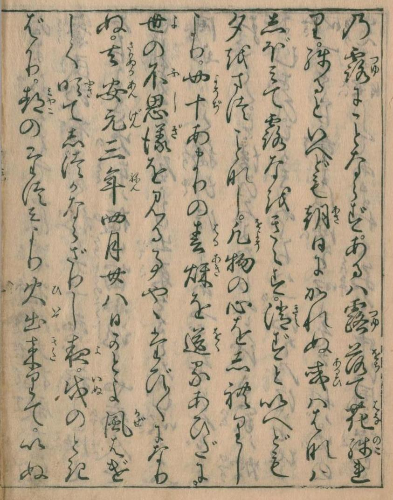 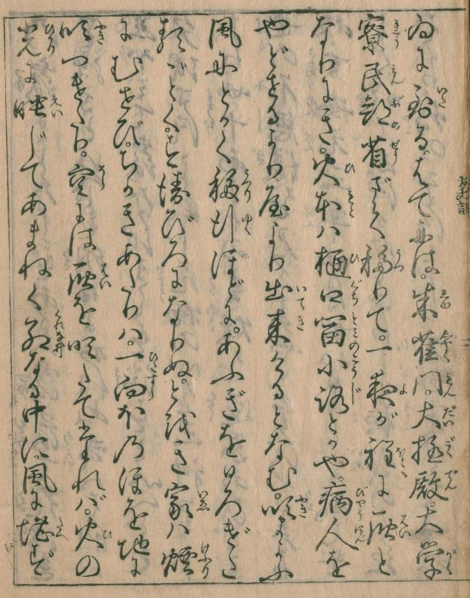また治承四年卯月廿九日のころ、中の御門京極のほどより、大なるつじかぜ起りて、六條わたりまで、いかめしく吹きけること侍りき。三四町をかけて吹きまくるに、その中にこもれる家ども、大なるもちひさきも、一つとしてやぶれざるはなし。さながらひらにたふれたるもあり。けたはしらばかり殘れるもあり。又門の上を吹き放ちて、四五町がほど（ほかイ）に置き、又垣を吹き拂ひて、隣と一つになせり。
（訳）治承四年の四月の頃には又大きな旋風の起った事があった。京極のほとりに起って六条のあたりまで吹いたものであった。全く物すさまじい勢いきおいのもので、三、四丁も吹いて行く間に、ぶっつかる所の大きな家うちでも、小さなのでも、どんな家でも殆ど覆くつがえしたり、破壊したり、破損したりしたものであった。それ程すさまじい勢に吹きつのった事であった。旋風に巻き込まれてその儘地上の上にペシャンコに倒されてしまったものや、桁けたと柱だけが残って障子や、壁はすっかり吹き抜かれてしまったのもあった。そうかと思うと門を吹き飛ばして四、五丁も先に持って行ってしまったり、垣を吹きとばしてしまって隣家との境を取りのけてしまって庭続きにしたりして方々にとんだ悲喜劇を起させた。
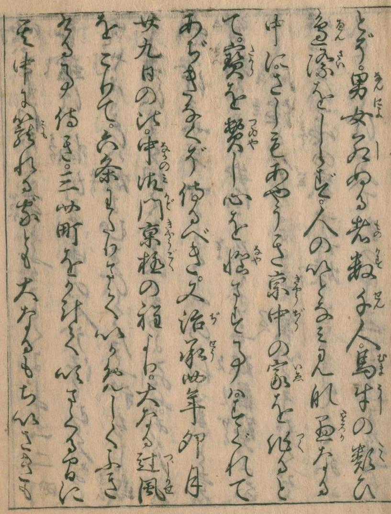 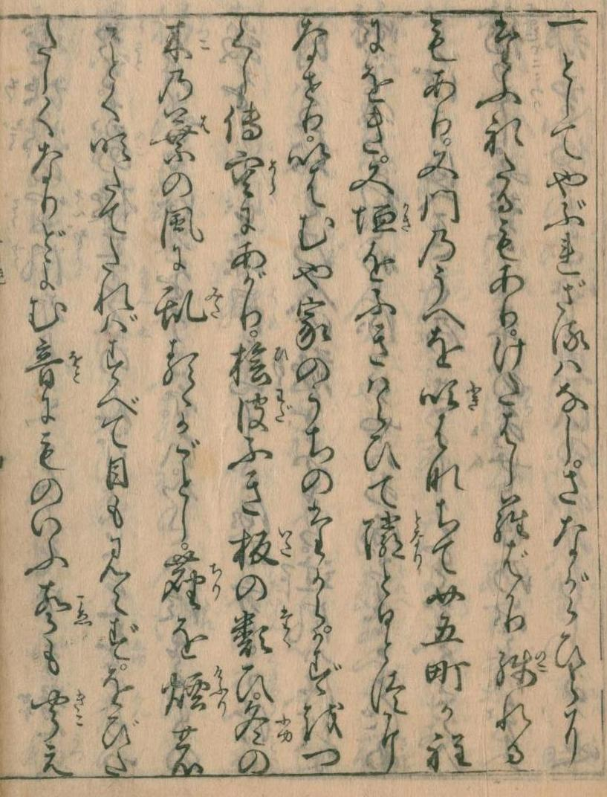又養和のころかとよ、久しくなりてたしかにも覺えず、二年が間、世の中飢渇して、あさましきこと侍りき。或は春夏日でり、或は秋冬大風、大水などよからぬ事どもうちつゞきて、五穀ことごとくみのらず。むなしく春耕し、夏植うるいとなみありて、秋かり冬收むるぞめきはなし。
（訳）養和の頃の出来事であったと覚えているが何分なにぶんにも古い事ではっきりした時は云われないのだが、その頃の二年の間と云うもの実にひどい飢饉のあった事があった。実に惨憺たる状態ありさまを呈した事があった。春から夏にかけての長い間に一滴の雨すら降らず、毎日毎日の日照り続きで田畑でんぱたの作物は皆枯死してしまう有様であった。それかと思うと秋になると大風があったり、大雨が降って大洪水になったりして全く目も当てられない様子で穀物等の収穫はまるで無く、唯徒いたずらに田を耕し畑に種を蒔いたのみでその甲斐はなく、秋の忙しい苅入れ時には何もする事がなく、全くの、前代未聞の災難が起ったのである。
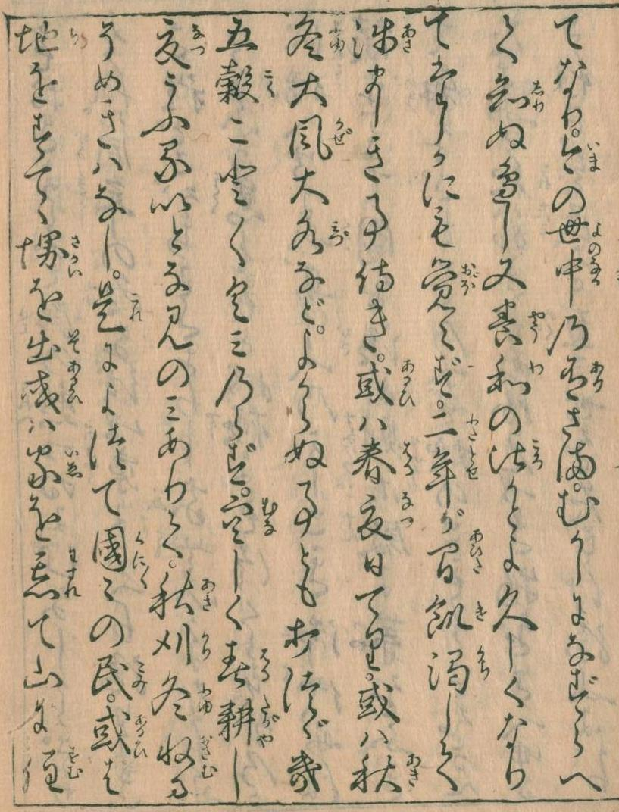これによりて、國々の民、或は地を捨てゝ堺を出で、或は家をわすれて山にすむ。さまざまの御祈はじまりて、なべてならぬ法ども行はるれども、さらにそのしるしなし。京のならひなに事につけても、みなもとは田舍をこそたのめるに、絶えてのぼるものなければ、さのみやはみさをも作りあへむ。念じわびつゝ、さまざまの寳もの、かたはしより捨つるがごとくすれども、さらに目みたつる人もなし。たまたま易ふるものは、金をかろくし、粟を重くす。乞食道の邊におほく、うれへ悲しむ聲耳にみてり。
（訳）だから人々はその先祖代々住みなれた土地を見捨ててしまって諸国を放浪して歩いたりする様になった。またある人々は家や耕地を全まるで見忘れたかの様に見捨ててしまって山の中に入り込んで暮らしたりしていた。山の方がまだまだ木の実等の食物があったからであろうと思われる。こうした真に惨憺たる状態にあっては人々は自滅の途を辿るより他に道がないと天子様の方でも御心配にならせられて色々な御祈祷や特別に霊験あらたかなと云われている修法等を執り行わせられたものであるが、一向にその験しるしも現れては来なかったのであった。元来京都の人々は何事によらずその物資の供給を総て田舎から受けているのであるから、その供給者である田舎が天災の為に物資が全然取れなかったのであるから、京都の人々は勿論もちろん物資の不足を告げる様になって来たのである。京都は全く物資の供給者を失った事になったのである。こうなると困るのは京都の人々である。第一に食物を得る事が出来ない。それでその食物を得る為にとうとう恥も外聞もなく、家財道具を捨て売りにしてはお米を持っている人々の所へ買いに行くのだけれどもこう物資の不足している時に大事なお米は売れないとあって、とても高い値でなければ売ってくれない。こう云う状態だから、どれだけお金があっても宝物があってもどうにもならない有様である。だからだんだんと日の経つにつれて乞食共が多くなって来て、路傍に一杯群がって食を乞うその哀れな叫び声が道に満ち溢れて聞えて来る様になって来たのである。
 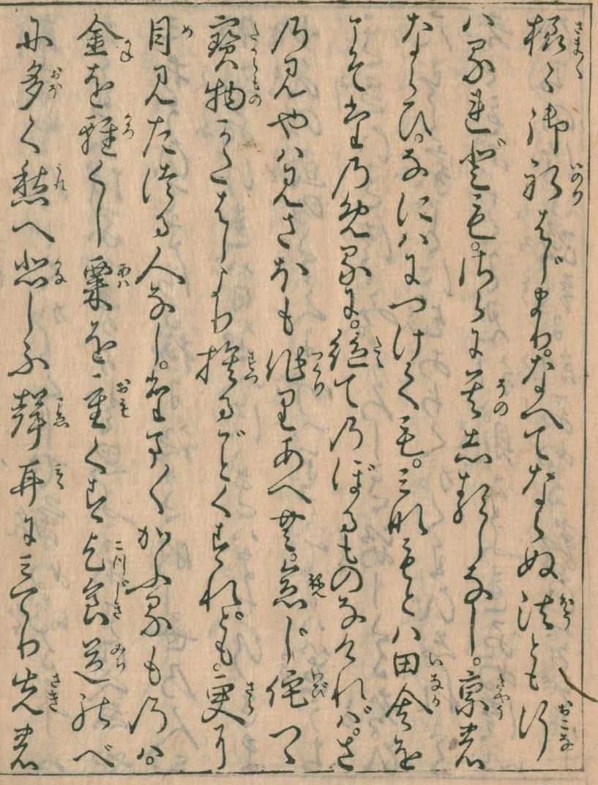
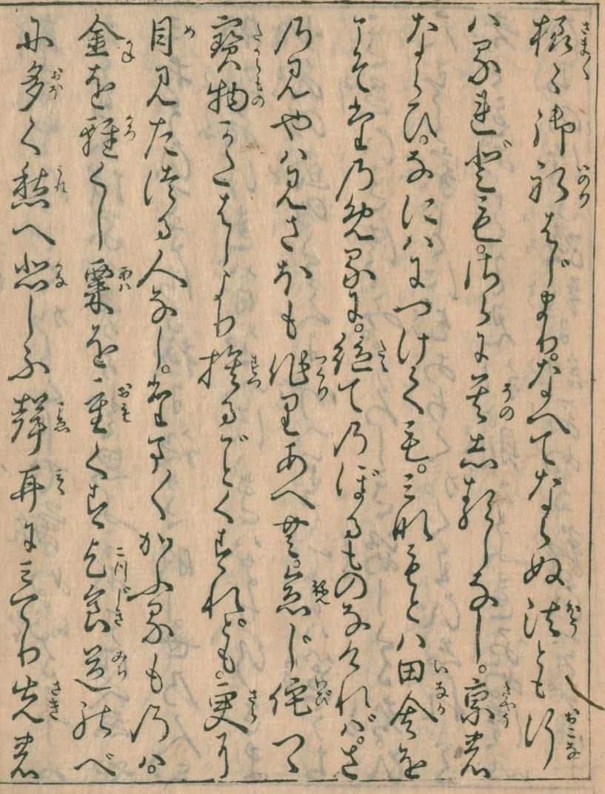
また元暦二年のころ、おほなゐふること侍りき。そのさまよのつねならず。山くづれて川を埋み、海かたぶきて陸をひたせり。土さけて水わきあがり、いはほわれて谷にまろび入り、なぎさこぐふねは浪にたゞよひ、道ゆく駒は足のたちどをまどはせり。いはむや都のほとりには、在々所々堂舍廟塔、一つとして全からず。或はくづれ、或はたふれた（ぬイ）る間、塵灰立ちあがりて盛なる煙のごとし。地のふるひ家のやぶるゝ音、いかづちにことならず。家の中に居れば忽にうちひしげなむとす。はしり出づればまた地われさく。羽なければ空へもあがるべからず。龍ならねば雲にのぼらむこと難し。おそれの中におそるべかりけるは、たゞ地震なりけるとぞ覺え侍りし。
（訳）同じ頃の出来事なのであるが、もう一つその上に大きな地震と云う災難に見舞われた事があった。その地震と云うのが今まであったどれよりも強く、従ってまたその被害も常日頃の様なものではなく実にひどいものであった。大きな山は地震の為に崩れて来て、下に流れている河を埋めてしまったり、海の水は逆行して岸辺に上り、更に人の住家のある所まで流れて来たりした程であった。又土地が二つに割れてその間から水が湧出して来たり、大きな岩がゴロゴロと谷間にころげ落ちたりして、いやもう大変な物すごさであった。海に出ていた船は地震の為に、大波の為に木葉の如くに翻弄され、道を歩いている人々や、馬や牛などはひょろひょろとしてその足場を失って倒れたりする始末で大変な騒ぎであった。都にある所の立派な家や、大きな家や、小さな家は一軒として満足なものはなく、総てが倒されてしまっている。神社や仏閣等も数多くその立派な建造物を倒されている有様である。完全に倒されたのや、半分倒された家々のあたりには、まるで盛んな煙の様に塵や灰が立ち登っている。地面が、ゆり返しの地震にゆれたり、大きな家が倒されたりする時には、雷様のなる様なすさまじい音がするのである。人々は落ち付く所もなかった。家の中に居れば今にも家が圧しつぶされはしないかと心配でじっとしてはいられないし、外へ走り出れば地面が割れて来る始末、何処にも行き様がなかった。もしも空へ逃げる事が出来さえしたならば、一番好いのだが、情けないかな人々には羽がなくてそれすら出来ず、まことに又飢饉以上の情けない哀れな状態と云うべきだ。もしもこの場合に竜にでも成り得たならば、雲に乗って昇天すると云う手も考えられはするのだが、情けない事には竜ではなく人間なのだからどうする事も出来ない有様である。世の中には恐ろしいものは他にも幾らもあるのだけれども、地震の大きくて強いの程、恐ろしいものはないものだとつくづく悟る事が出来た次第である。
 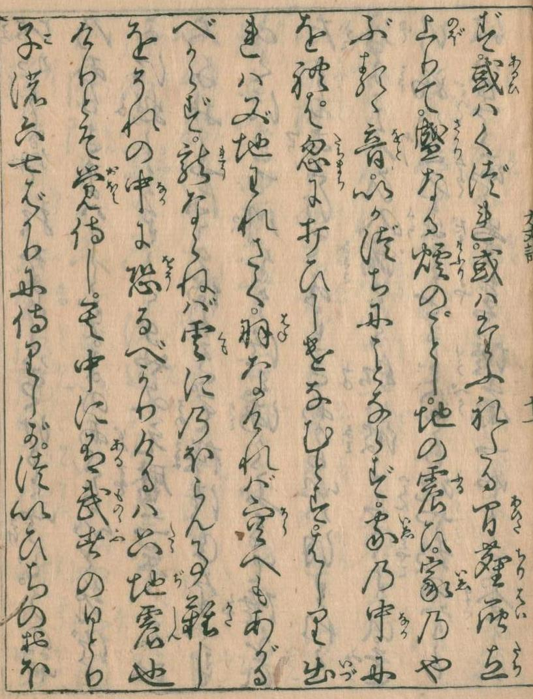
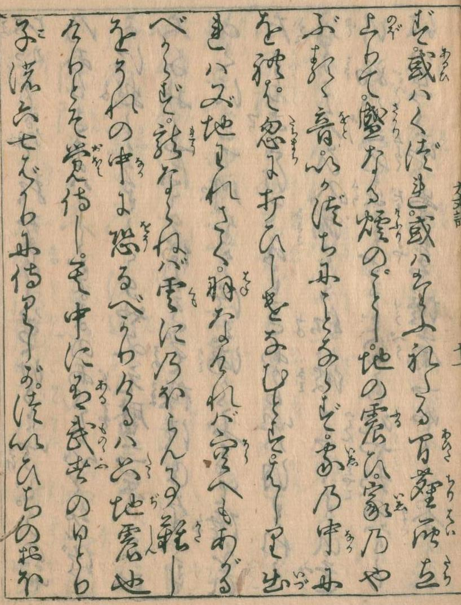
かくおびたゞしくふることはしばしにて止みにしかども、そのなごりしばしば絶えず。よのつねにおどろくほどの地震、二三十度ふらぬ日はなし。十日廿日過ぎにしかば、やうやうまどほになりて、或は四五度、二三度、もしは一日まぜ、二三日に一度など、大かたそのなごり、三月ばかりや侍りけむ。
（訳）人々の落ち付き場所もなくなる程に強く激しく震動する所の地震は、しばらくの後に止んでしまったのであるが、その後に来る所の余震と云うものは中々に止みそうもなかった。その余震さえもが普通には誰でもが驚く底の強さのもので、これ位のが日に二、三十度は必ず起ったのである。しかしだんだんと日が経ち、十日過ぎ二十日過ぎ、となって行く中に、さしもにひどかった余震もだんだんと度数が少なくなり、間を置く様になって来た。日に四、五度の少なさになり、二、三度になって、遂に一日置きになり、二、三日に一度とだんだんに少なくなっては行ったものの、大体に於て三月と云うものの間は余震がずっと続いていたのである。
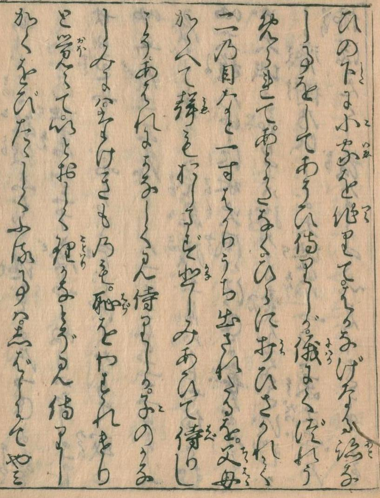 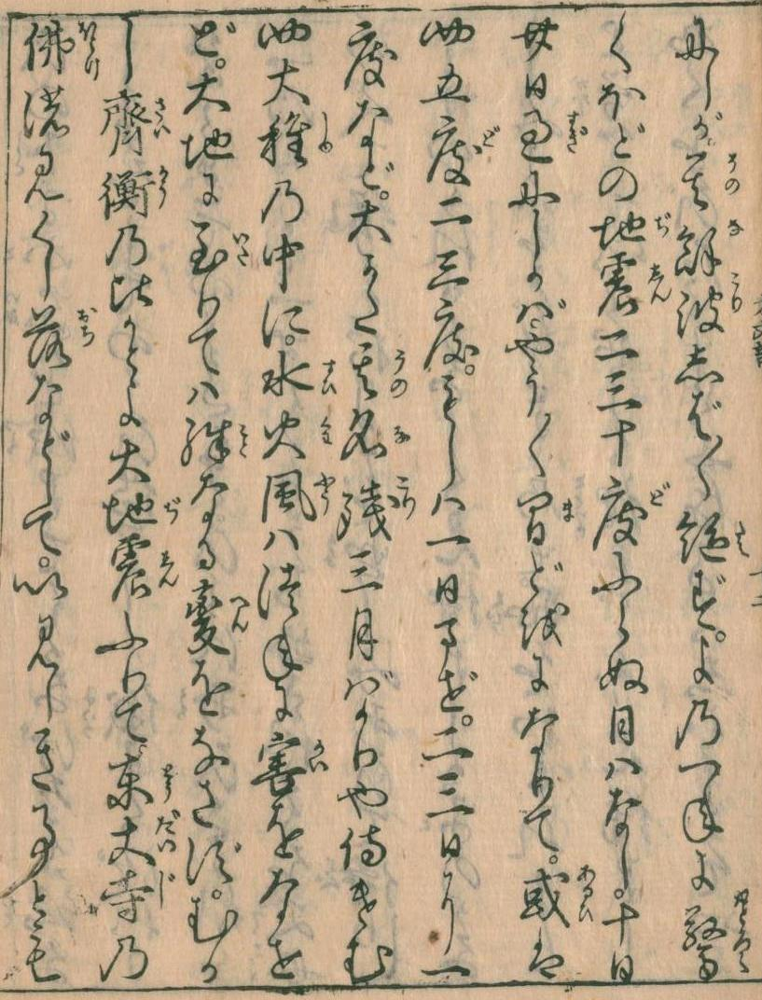四大種の中に、水火風はつねに害をなせど、大地に至りては殊なる變をなさず。むかし齊衡のころかとよ。おほなゐふりて、東大寺の佛のみぐし落ちなどして、いみじきことゞも侍りけれど、猶このたびにはしかずとぞ。すなはち人皆あぢきなきことを述べて、いさゝか心のにごりもうすらぐと見えしほどに、月日かさなり年越えしかば、後は言の葉にかけて、いひ出づる人だになし。
（訳）火水風は絶えず人々に災害を与えているものであるのだが、大地はあまり災害を与えるものではないものなのに、今度ばかりはちと見当違いにひどく大きな災害を与えたものである。今度の地震と昔の斉衡さいこうの年間にあった地震で、東大寺の大仏様の頭を地に落したと云って騒いだ時のと比較して見ても、今度の地震から見ると、そんなのは物の数でもない小さいものなのであった。それ程に今度のはひどかったのである。この様に色んな災難に遭遇して見ると、人の生活と云うものが如何につまらなく、人生そのものさえ味気ないものに思われてきて、せめてこの世に居る間だけでもとお互い相助け合い、気持好く、私利私慾を貪る事なく暮したいものだと人々は考える様になって来た。少しは濁っていた人々の心も打ち続く災難の為に改まったのであろう。けれども人々の心持なんて当あてになるものではなく、だんだんと日が立ち月が経ち年が経つにつれて、そう云った大きな災害のあった事など何時の間にか忘れてしまって、お互に助け合うの、お互に、私利私慾を貪らずに気持よく暮らそうなんて云う気持はもうどこへやら行ってしまって、又元の私利私慾のみを考える様になり、嫌いやな世の中にだんだんとなって行ってしまった。真に情ない事である。
 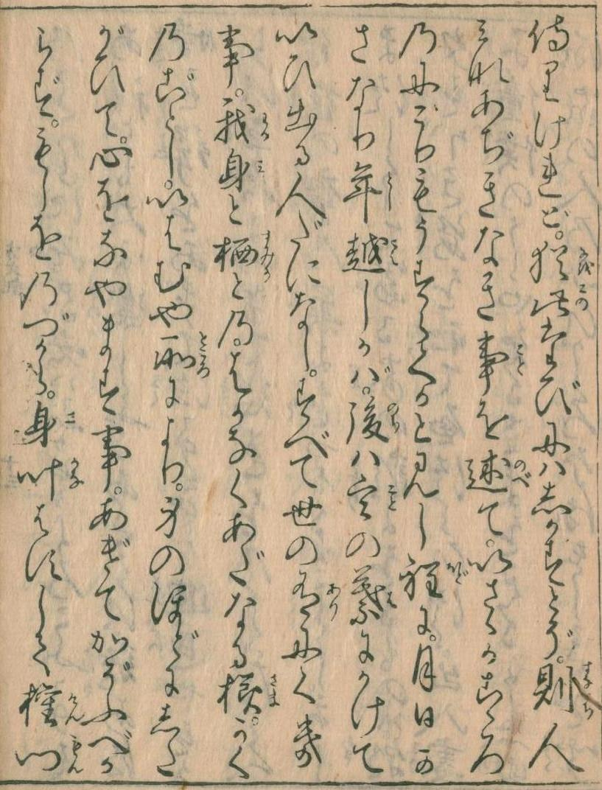
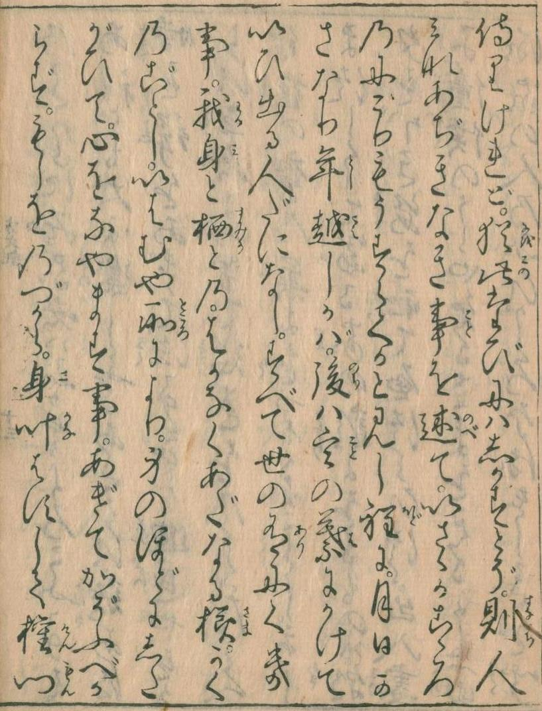